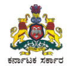

Tumkuru District
Home
About District
History
Who's who
Map of District
Organisation
Administrative Setup
Demography
Directory
Disaster Management
Helpline
STD and PIN Codes
Public Utilities
Departments
Agricultural Marketing
Animal Husbandary
Deputy Registar of Cooperative Societies
D.Devaraju Urs Backward Classes Development Corporation LTD
Dr.B.R Ambedkar Development Corporation Limited
Education
Health and Family Welfare
Handlooms and Textiles
Information
Tourism
How to Read
Culture and Heritage
Tourist Places
Documents
Yetthinahole Drinking Water Project
ULB Elections 2019-Final Voter List
Statistical Report
Tumkar-Rayadurga Railway Project
Lok Sabha Election 2019
Notices
Recruitment
Tenders
Events
Schemes
Citizen
Media Gallery
Photo Gallery
RTI